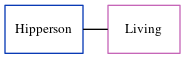

Rosina Ellen Horne cFeb 1916 - c1929
[ Home ] | [ Calendar ] | [ Surnames Index ] | [ Errors ] | [ Family History ]The child of Charles Horne (a market gardener worker) and Amy Spratt, Rosina Horne, the first cousin once-removed on the father's side of Nigel Horne, was born in St Peters, Thanet, Kent, England c. Feb 19161,2,3. On 19 Jun 1921, she was living at Sacketts Hill Farm, St Peters, Thanet, Kent, England1.
She died c. May 1929 in Thanet3.
Parents
- Charles Henry was born on 1 Apr 1884
- Amy was born c. May 1879
Citations
- 1921 Census Of England & Wales - Findmypast (was age 5 and the daughter of the head of the household)
- England & Wales births 1837-2006 - Findmypast
- England & Wales deaths 1837-2007 - Findmypast
Media
England & Wales births 1837-2006 - BMD/B/1916/1/AZ/000664/073
England & Wales deaths 1837-2007 - BMD/D/1929/2/AZ/000440/020
Family Tree
Map
Generated by ged2site. Last updated on Jul 3, 2024
Known Issues
Location for 19 Jun 1921 (Sacketts Hill Farm, St Peters, Thanet, Kent, England) differs from mother's (Sackettshill Farm, Thanet, Kent, England)